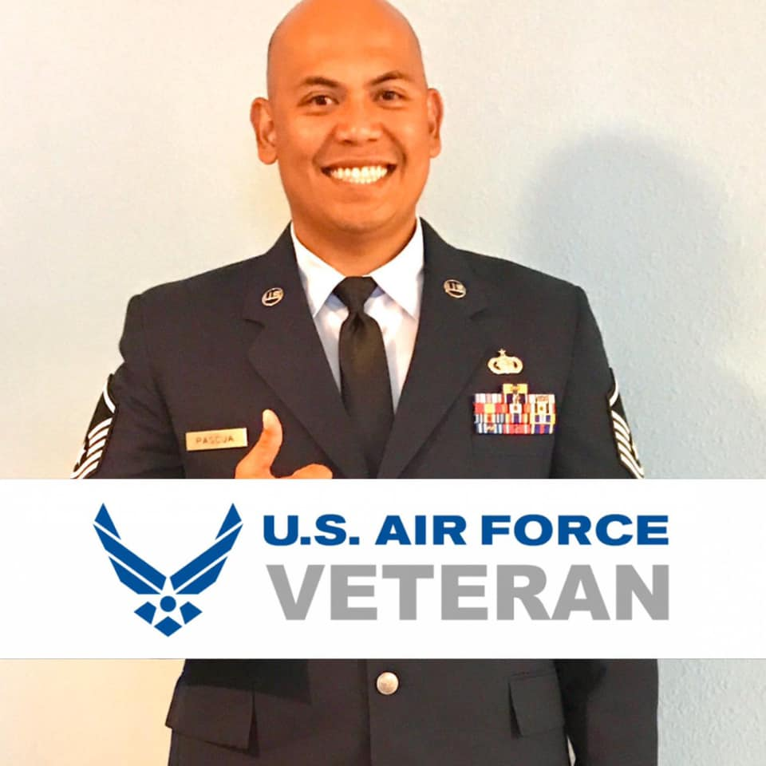
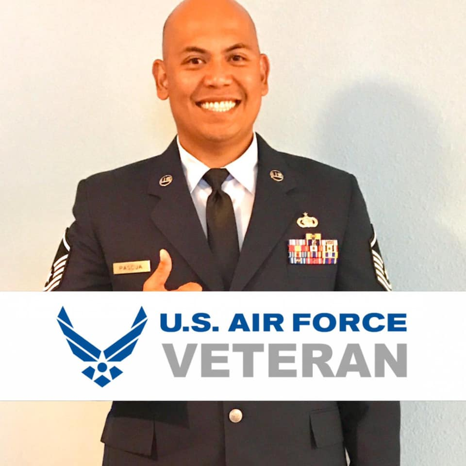

I am Destiny Garcia, a student, daughter, sister, feminist and dog lover. To get to know me better, I will explain my life through photos below.
I was born to a single mother in Lawton, Oklahoma where I resided for 12 years.

I moved to Misawa AFB, Japan in 2012 with my mom, my active duty step-dad, and two sisters Lilo and Haley. I went to school there from the 7th-11th grade. I attended school on the air force base where to played softball, cheerleading, and learned my love for acting/theatre and photography. I traveled to Tokyo with my family, explored the town I lived in, attended various Japanese festivals, and traveled around Japan and South Korea for sports and theatre tournaments and camps.
 


In 2017, my family was moved to Scott AFB, Illinois where to finished my senior year of high school and grew to love creative writing.

In 2018, I graduated High School and moved back to Oklahoma to attend Cameron University where I studied journalism and worked for the university collegian as a staff editor and copy writer for the very first time ever. I did not know where to wanted to go to school after graduation, so I started at a small university my mom had attended where I could live with family and one my mom could afford. After my first semester, I knew that I needed more. I wanted to be challenged more than I wa but I did not know how to solve that problem.

In 2019, I atteneded a Mizzou homecoming football game with my grandpa who is a MU alumni and my dad. By complete coincidence I ran into a lady in the Journalism Institute building who was looking for attendees who signed up for a Journalism school tour. She asked me if I was one of them, and when I told her that I was no she told me "well, now your are". So, I toured the Journalism school completely by accident and they blew me away. I was in deep deep love. I applied in my hotel room that night, paid the application fee myself, and the rest is history. I chose to take a leap of faith, to navigate through residency, financial aid, and student loans to pursure the education I had dreamed of.


I am now a student studying at my dream school, The University of Missouri School of Journalism where I work part time as a waitress to afford school like many other students do. I live with my boyfriend and my dog-son, Eugene and plan to gradute in 2022.